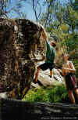
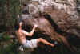

By Steve Baskerville, October 1999
Last updated 24 March, 2000

| Emerald Creek Bouldering Guide |
By Steve Baskerville, October 1999 Last updated 24 March, 2000 |
|
|
|
Emerald Creek offers some of the finest bouldering in the North Queensland region, and has the advantage, (or
disadvantage?), of being only 15
minutes from Mareeba. The problems are all on moderate sized granite boulders. There are over 30 existing problems up to about V3, although this guide only mentions the better problems.
To get to Emerald Creek, drive along the highway from Mareeba to Cairns and take the turn off to the TAFE, (about 2km out of town), on the R hand
side. About 3km along this road you will reach a hill, at the top of which there is a road turning off to the L. Follow this all the way to Emerald
Creek. From the car park follow the walking track to the lookout up for about 500m. Where the track veers R, away from the creek bed, join the track that goes off L and follows the creek bed. About 50m up this track
you will reach a long flat boulder. The first problem is on this boulder.
Unnamed V1
A good traverse along the front of the boulder that could be continued all the way around the boulder.
Steve Baskerville Feb 99
Around the back of this problem is a steep wall that overhangs about 45 degrees. The next problem climbs up this.
** Down And Dirty V3
Sit start with good edges at the base of the cave and a massive single crux move lead to a mantle
topout.
Steve Baskerville Feb 99
About 30m further up the track is an obvious larger boulder. This awesome boulder has numerous problems on it, the best of which are mentioned
below. The first starts at the L hand end when walking up the track.
Mono V0+
Sit start with one finger pocket and edge, feet on chockstones and big move to two finger pocket. Good holds lead to an easy
topout.
Steve Baskerville Feb 99
* Enigma V3
Starts at mono and traverse R for 5m on evil slopers, pockets and tiny crimps to victory jug and
topout.
Steve Baskerville Feb 99
|
*** The Smooth Machine V0 |
 |
|
Above: Tris Baskerville slapping the top of The Smooth Machine |
*** Wonderbra V3/V4
A classic dyno. Jason was struggling and didn't look like he would get it,
that was until a group of girls in bikinis came up the track. He suddenly found some reserves of strength, fired the problem and then did it one
more time just in case they missed him doing the it the first time. Start at the sit start for TSM and dyno for the sloping jug about 4 feet above
your starting holds.
Jason Shaw September 99
* Because He Didn't Have Weet-bix For Breakfast V3
The low and powerful sit start 1m R of TSM on the long diagonal edge. Pop to slot in horizontal break and trend L to join TSM at the top.
Jason Shaw September 99
** I Guess He Did Have Weet-bix For Breakfast V3
Contender, along with Enigma and Wonderbra for hardest problem at the creek. As for the above problem, only after latching the slot, move L and
finish up the LHV of TSM.
Jason Shaw September 99
|
* Sideswipe V1 |
 |
|
Above: Steve Baskerville on Sideswipe |
* Slapstick V1/V2
On the back of the above boulder, on the small overhanging wall. Sit start with side pull for L hand and edge for R. Pull on and slap your way to the
top.
Steve Baskerville and Jason Shaw September 99
* Slapevil V3
One for shorties with a very bunched sit start. As for above problem, only start with the two small crimps in the tiny flake line.
Jason Shaw October 99
Follow the track up and across the creek to reach the waterfall. On the L hand side of the creek bed there is a small cave with a sandy base. This
is the next problem.
* Depressions In The Roof V1/V2
Starts in the cave and moves out, traversing the lip on very cool holds, before pulling onto the slab.
Jason Shaw July 98
The slab of the above boulder can be done by itself at about 13, on some really nice featured holds.
5m further up the creek, in amongst a large collection of boulders is the next problem.
Project V5?
Starts at the diagonal seam on some small edges, and then continues up the blank looking face on some small sloping depressions.
The next problem climbs out of the swimming hole and up the obvious overhanging arête. Very photogenic.
*** Unnamed V2-V4
Grade depends on the water level. Essentially straight up the juggy overhanging arête. Doug Hockly has attempted the mantle topout but says
it's pretty full on.
Now back downstream, about 15m past DITR. There is a large boulder with an orange roof and some nice holds at the lip. This is the next problem, only
be careful of wasps as they tend to build there nests under the roof.
* Stung V1
Start on the jugs at the lip of the roof and then head up to a sloping top. Either do the horrendous topout or traverse R and jump down. There
is a possible direct start on the lower set of jugs. I tried this but was staring face to face with a wasp nest so left it for another time.
Jason Shaw October 99
Unnamed V0-
A nice little slab problem starting 5m downstream of the above problem. Start low and head up with opposing layaways. A sit start awaits someone
with some serious lock off power.
Tris Baskerville October 99
* Crimpers In The Closet V2
Another great slab problem. Starts 5m DS on the round boulder. Start on the slopers at about half the height of the boulder. Hard move to some
desperate holds leads to an easy topout.
Jason Shaw September 99
*** Crimpers In The Closet DS V4 (Project)
Jason came extremely close to nailing this incredible problem, but fell on the
second last move. Sit start down low with the double handed diagonal lay
off. Up to crimp and then slap across on slopers. Finish up the final moves of CITC. Immaculate rock, great moves and a
friendly landing make
this one of the most memorable lines at the creek.
Project: Jason Shaw
In addition to the mentioned problems thee are many easier problems and the potential for plenty of new problems. Any exploration seems to
find even more rock, especially upstream of the waterfall and lookout.

{kind=link}
{kind=link}